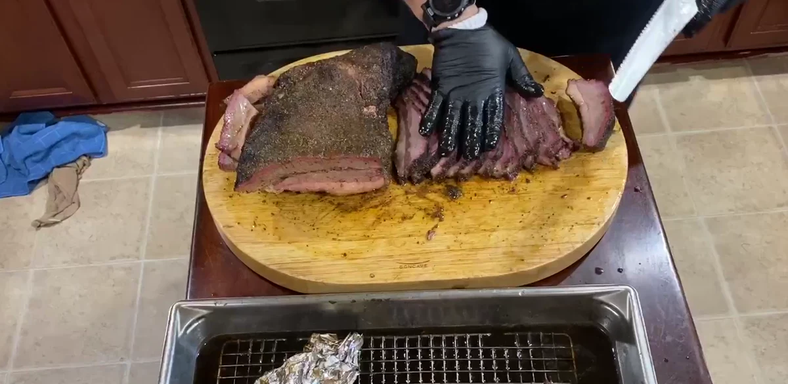
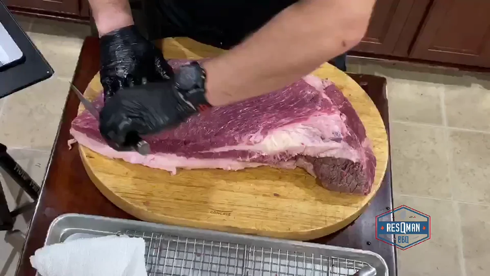
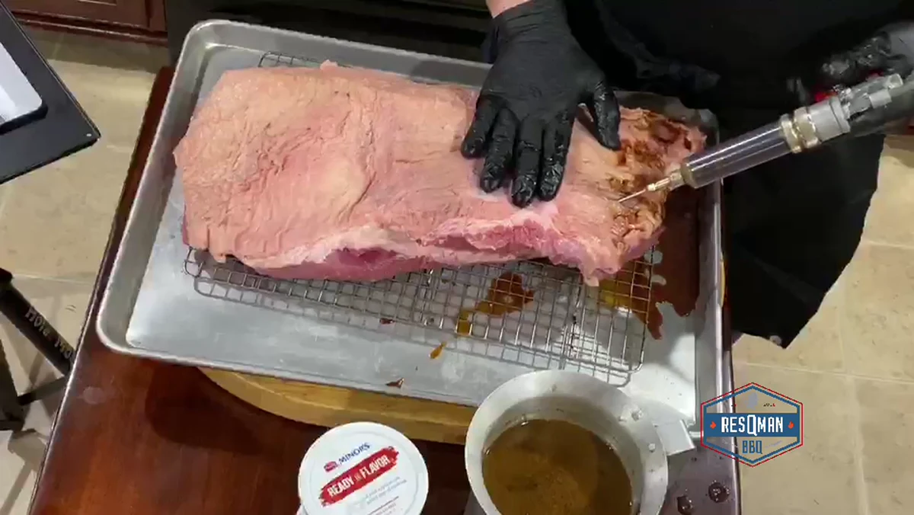
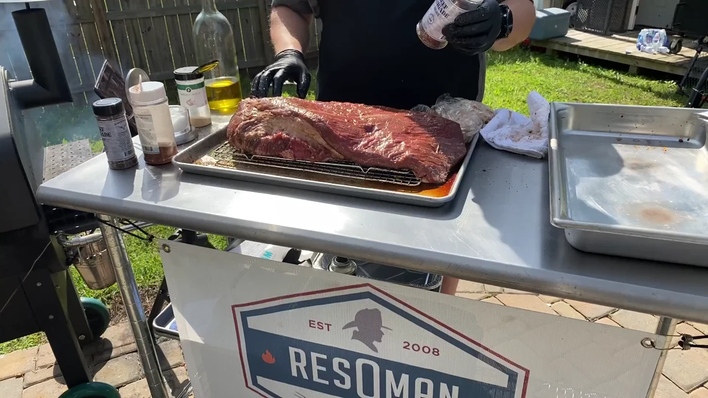
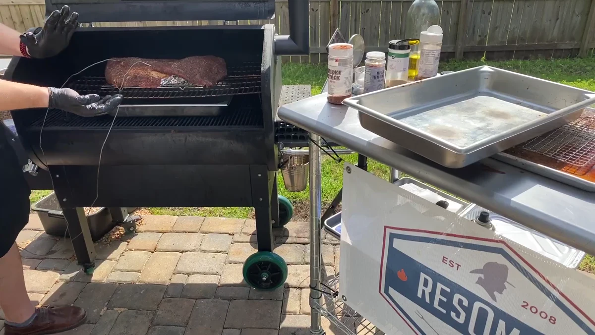
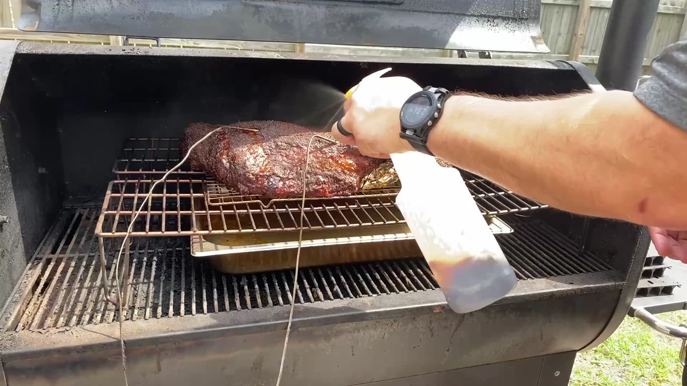
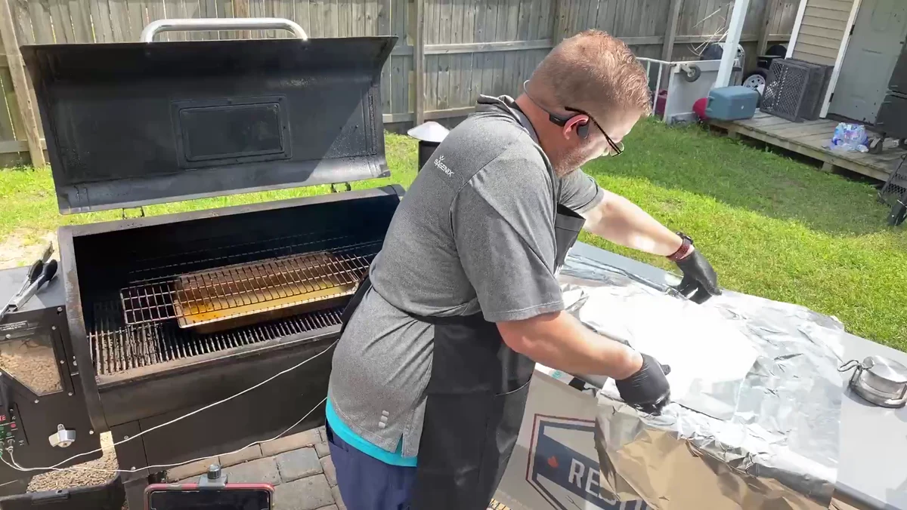
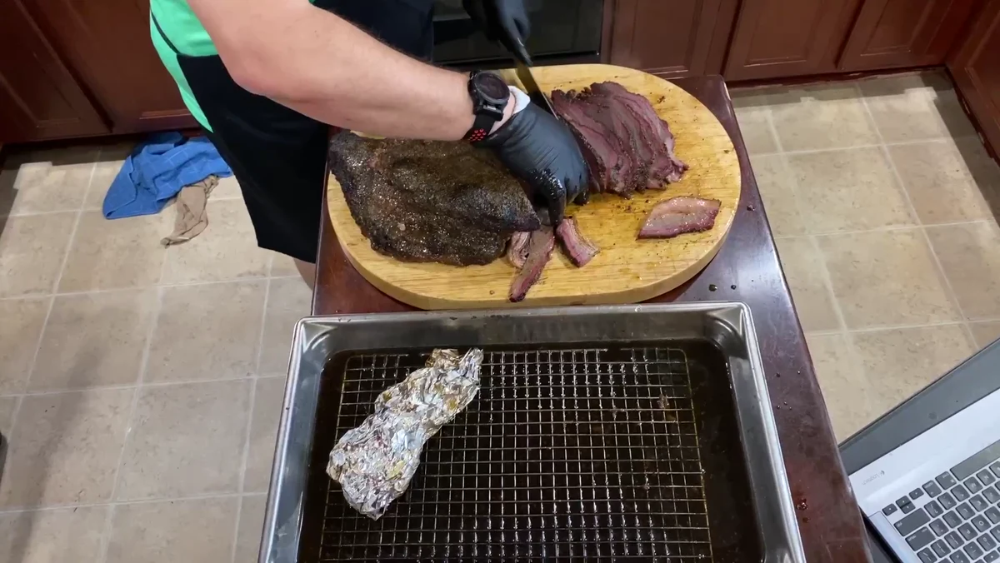

Dan Caskie’s pellet-grill method
Turbo
Brisket
Build the bark, seal the pan, and cook until the probe slides in easily. Follow the original cook one photo at a time.
Jump to the recipe
The recipe
One whole packer brisket. Allow about 4 hours on the grill and 2 hours to hold it hot, plus prep. Build in extra time for tenderness.
- Preheat
- 325°F
- Cook setting
- 300°F
- Check tenderness
- ≈203°F
- Hot hold
- ~2 hr
Ingredients
- 1 whole packer brisket, with the flat and point
- 1 quart water for the beef mixture, plus water for the pan
- 3 tablespoons Minor’s beef base
- 3 tablespoons Minor’s beef au jus concentrate
- Low- or no-sugar brisket rub with salt, black pepper, and garlic
- Wood pellets for your grill
Gear
Pellet grill, upper rack, water pan, full-size foil pan, heavy-duty foil, injector, spray bottle, probe thermometer, and a slicing knife.
Cook timeline
- 0:00
- Load the brisket above the water pan, drop to 300°F, and leave the lid closed.
- 1:00
- Start spritzing. Repeat every 15 minutes for six spritzes through 2:15.
- ~2:30
- Seal the brisket in a foil pan and return it to the grill.
- ~4:00
- Check the thickest part of the flat near 203°F. Pull when the probe slides in easily.
- +2 hr
- Vent briefly, reseal, and hold at 140°F or warmer before slicing.
The cook, in photos
Select any photo for a closer look.
-
Trim and mark the grain
Trim up to 24 hours ahead and refrigerate. Remove hard fat and silverskin from the meat side. Leave a thin layer on the fat side. Cut a small notch across the grain at one corner of the flat so you can find the direction of your first slice after the bark forms.

Use a corner of the flat to mark the slicing direction. -
Mix, chill, and inject
Dissolve the beef base and au jus concentrate in the quart of hot water, then chill. Pour off a clean portion for spritzing before the injector touches raw beef, and refrigerate it until needed. Inject over a pan in a roughly one-inch grid. On the flat, run the needle along the grain. You can inject up to 8 hours ahead. Keep the brisket refrigerated.

The pan catches the beef mixture as you inject. -
Season the brisket
Use a little of the injection from the prep bowl to coat the surface, then add the low-sugar rub. The filmed cook used a small amount of olive oil as a binder. Season the edges first and go lighter on the fat side.

Give the exposed meat and edges an even coat. -
Set up the pellet grill
Preheat to 325°F. Put the brisket on the upper rack with a water pan underneath. Place a leave-in probe in the thick part of the flat. Drop the grill to 300°F, close the lid, and leave it alone for the first hour.

The brisket sits on the upper rack. The water pan goes below it. -
Spritz to build the bark
At 1 hour, lightly spritz with the clean reserved beef mixture. Repeat every 15 minutes, six times total. Keep each lid opening brief.

Give the surface a light mist and close the lid. -
Seal the pan and finish
At about 2½ hours, put the brisket in the foil pan. Crimp heavy-duty foil tightly over the pan and return it to the grill. Start checking the flat as it approaches 203°F. Pull it when the probe slides in with very little resistance. If it still feels tight, reseal and give it more time.

Crimp the foil around the whole rim before it goes back on the grill. -
Hold hot, then slice
Vent the pan for 2–5 minutes, then reseal. Hold it hot for about 2 hours in a warm oven or insulated cooler that keeps the meat at 140°F or warmer. Start at the notch and cut pencil-thick slices across the grain. Check the grain again when you reach the point.

Use long strokes and slice across the grain.